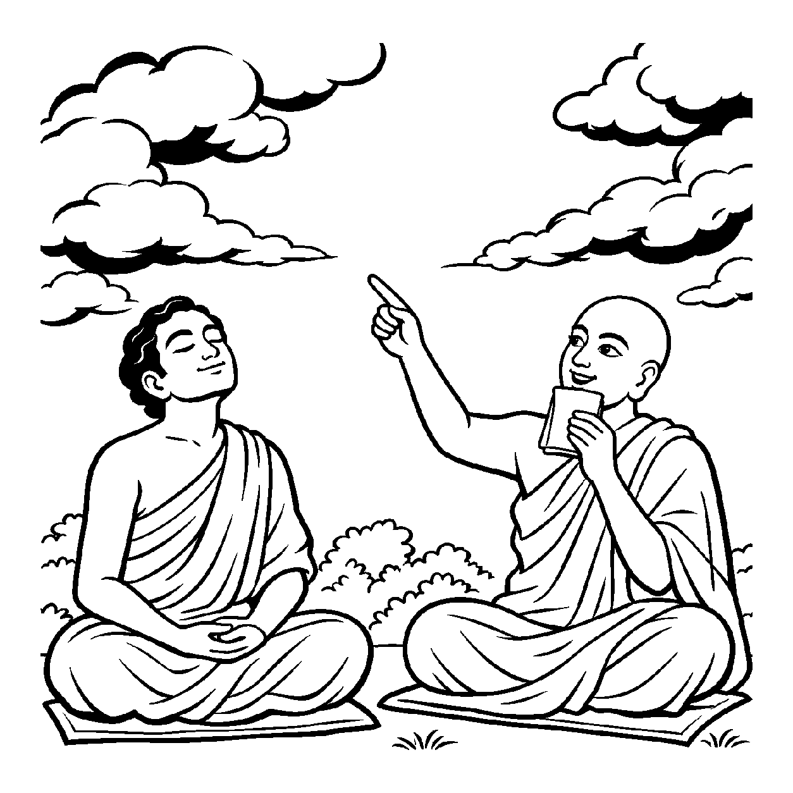

આકાશમાં વાદળો આવે, વિમાન ઊડે, વાવાઝોડું ફૂંકાય કે વીજળી પડે; આકાશ કોઈનું સ્વાગત કરવા રાજી થતું નથી કે કોઈને કાઢવા દ્વેષ કરતું નથી. આકાશનો સહજ પારિણામિક સ્વભાવ છે કેવળ તમામને અવકાશ (જગ્યા) આપવી. વાદળોના આવવા-જવાથી આકાશના આ સહજ ભાવમાં કોઈ વધઘટ થતી નથી. તેવી જ રીતે સંસારી આત્મામાં ઔદયિક (પાપ-પુણ્ય), ઔપશમિક, ક્ષાયિક કે ક્ષાયોપશમિક ભાવોના તરંગો ઊઠે છતાં પણ, તે તમામ ભાવોથી પર એવા આત્માના સહજ, ત્રિકાળી અને અહેતુક 'શુદ્ધ પારિણામિક પરમભાવ'ને ગ્રહણ કરીને — "આત્મા કેવળ જ્ઞાયકભાવરૂપ છે, અવિનાશી ચૈતન્યમય છે" — એમ વાણી દ્વારા પ્રતિપાદન કરવું તે 'પરમભાવગ્રાહક દ્રવ્યાર્થિક પ્રતિપાદક વ્યવહાર' કહેવાય છે.
તત્ત્વાર્થસૂત્રમાં જીવના પાંચ ભાવો કહ્યા છે: ઔપશમિક, ક્ષાયિક, ક્ષાયોપશમિક, ઔદયિક અને પારિણામિક. પ્રથમ ચાર ભાવો કર્મના ઉપશમ, ક્ષય, ક્ષયોપશમ કે ઉદયની અપેક્ષા રાખે છે; જ્યારે પાંચમો પારિણામિક ભાવ કોઈ કર્મતંત્રની અપેક્ષા રાખતો નથી! તે આત્માનો સહજ પરમભાવ છે. આ નય શબ્દો દ્વારા તે જ નિરપેક્ષ પરમભાવને જગત સમક્ષ પ્રગટ કરે છે.
જ્યારે સાધક તમામ પર્યાયગત વિકલ્પોથી થાકી જાય છે, ત્યારે આ પરમભાવ જ તેને શાશ્વત વિશ્રામ અને પરમ શાંતિ બક્ષે છે.
પાંચે ભાવો મધ્યમાં, પારિણામિક પ્રધાન;
પરમભાવ ગ્રાહક નયે, ભાસે આત્મ-વિધાન.
કર્મ તંત્રથી મુક્ત સદા, જ્ઞાયક ભાવ અનૂપ;
પરમભાવે સ્થિર થતાં, લાધે શિવપદ રૂપ.
જ્યારે સાધક તમામ પર્યાયગત વિકલ્પોથી થાકી જાય છે, ત્યારે આ પરમભાવ જ તેને શાશ્વત વિશ્રામ અને પરમ શાંતિ બક્ષે છે.

ધર્મક્ષેત્રના એક ઊંડા સાધક શાંતિવર્ધન આત્મધ્યાન કરતા કરતા એક વિષમ ધર્મસંકટમાં મુકાયા હતા. ધ્યાનમાં જ્યારે શુભ ભાવો આવતા ત્યારે તેઓ હર્ષ પામતા, અશુભ ભાવો આવતા ત્યારે શોક પામતા, અને ક્ષયોપશમ જ્ઞાન વધતું ત્યારે ગર્વ કરતા. એક દિવસ તેમને વિચાર આવ્યો: "હું આ ભાવોની વધઘટમાં જ ઝૂલતો રહું છું! ક્યારેક પુણ્યનો ઉદય, ક્યારેક પાપનો ઉદય, ક્યારેક ક્ષયોપશમ! શું આત્મામાં કોઈ એવો ભાવ નથી જે કર્મોના આ તાંડવથી સર્વથા મુક્ત હોય? મારે એવા શાશ્વત ભાવમાં આશ્રય લેવો છે જે ક્યારેય બદલાતો ન હોય!" શાંતિવર્ધન પરમ વિશ્રામની શોધમાં તલપાપડ હતા.
તે જ સમયે સંઘના પ્રખર અધ્યાત્મરસિક યોગીરાજ મુનિશ્રી અમૃતસૂરિજી ત્યાં પધાર્યા. શાંતિવર્ધને પોતાના મનની તરસ વ્યક્ત કરી. મુનિશ્રીએ આકાશ તરફ આંગળી ચીંધીને કહ્યું, "શાંતિવર્ધન, આકાશને જુઓ. આકાશમાં કાળા વાદળો ઘેરાય ત્યારે પણ આકાશ કાળું થતું નથી; શ્વેત વાદળો આવે ત્યારે શ્વેત થતું નથી. આકાશનો સહજ સ્વભાવ કેવળ અવકાશ આપવાનો છે. પરમભાવગ્રાહક દ્રવ્યાર્થિક પ્રતિપાદક વ્યવહાર આ જ પરમ સત્ય સમજાવે છે! તારા આત્મામાં ઉદય, ઉપશમ કે ક્ષયોપશમના વાદળો ભલે ઊઠતાં હોય; પરંતુ તારો મૂળ આત્મા એ તમામથી પર એવો શુદ્ધ પારિણામિક પરમભાવ છે! એ ભાવ કર્મની કોઈ અપેક્ષા રાખતો નથી, તે સદા કેવળ જ્ઞાયક રહીને પ્રકાશે છે. વાદળોને જોવાનું છોડીને આકાશ જેવા પરમભાવમાં વિશ્રામ પામી જા." મુનિશ્રીના આ અમૃતમય વેણનું પાન કરતાં જ શાંતિવર્ધનના તમામ વિકલ્પો વિલીન થઈ ગયા. તેમને પરમભાવનો સાક્ષાત્ વિશ્રામ મળ્યો અને તેમનું હૃદય પરમ શાંતિમાં સમાઈ ગયું.
જો આ નયને એકાંત સત્ય માનીને સાધક શુભ સાધના, વ્રત, તપ અને સંયમનો અનાદર કરી દે, તો તે સાધનાહીન બનીને સંસારમાં ડૂબી જાય છે. એક જ પાસાને પકડી રાખવાથી વસ્તુની સમગ્ર અનેકાંતમય સત્તા વિખંડિત થાય છે અને સાધક પોતાના જ એકાંગી આગ્રહના બંધનમાં ફસાઈને સાચી શાંતિ ગુમાવી બેસે છે.
આ નય જ્યારે સાધનાના વ્યવહાર સાથે સુમેળ સાધે છે, ત્યારે સાધક શુભ પુરુષાર્થ કરતાં કરતાં પણ અંતરમાં શુદ્ધ પારિણામિક પરમભાવનો આશ્રય લઈને મોક્ષ સાધે છે.